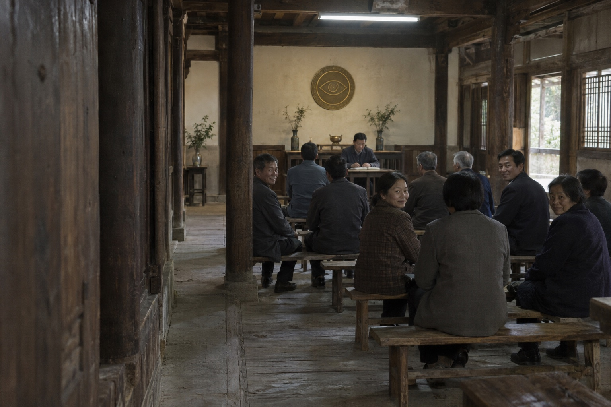
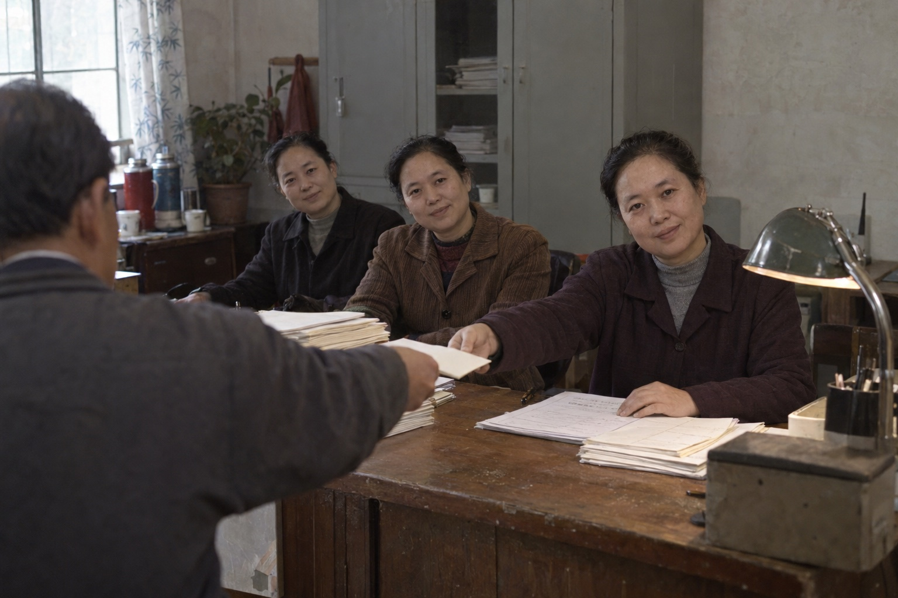
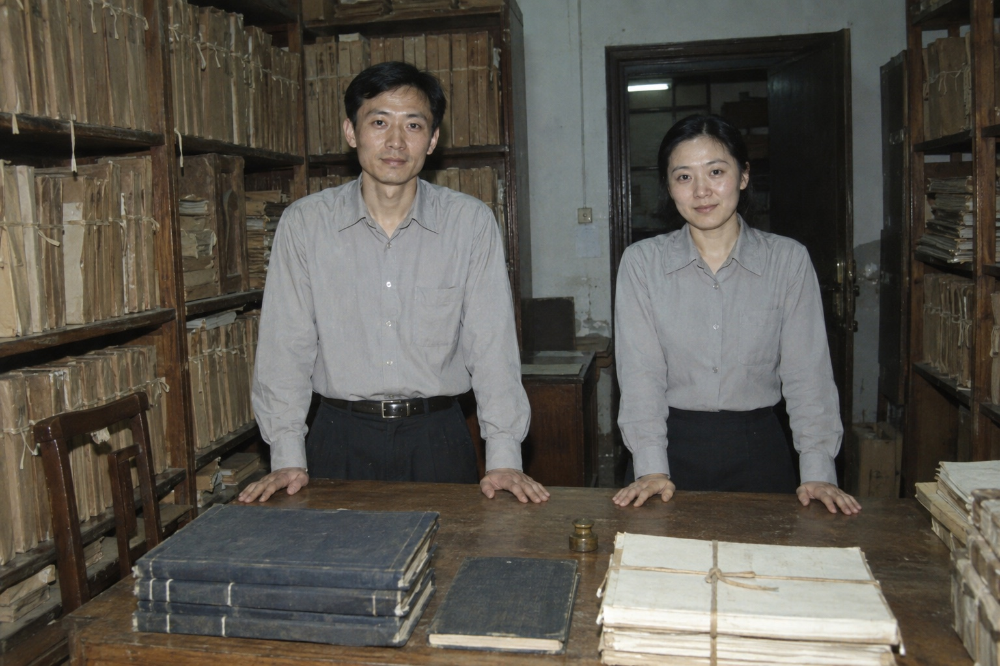
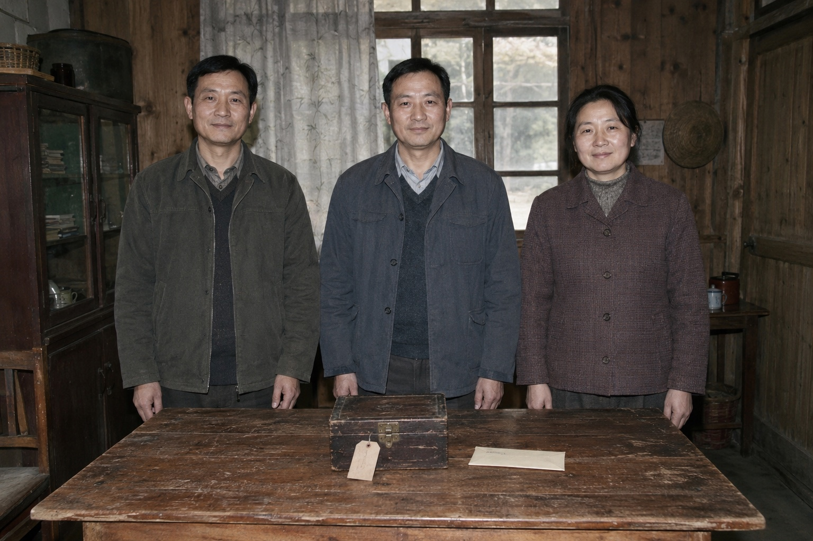

跳至正文
全知教会
THE ALL-KNOWING CHURCH
教会影像
祈愿簿
见证处 · 公开卷

凡有所愿，
皆有所闻。
翻阅祈愿簿
↗
礼堂集会

祈愿接待
↗

档案整理
↗

旧物交接
↗
祈愿簿
公开摘录
检索祈愿记录
⌕
检索
↗
类别
全部
团圆
安宁
留声
归还
偿还
状态
全部
持续见证
已封存
附页留存
请启用 JavaScript 以翻阅祈愿簿。
本机阅览
关闭 ×